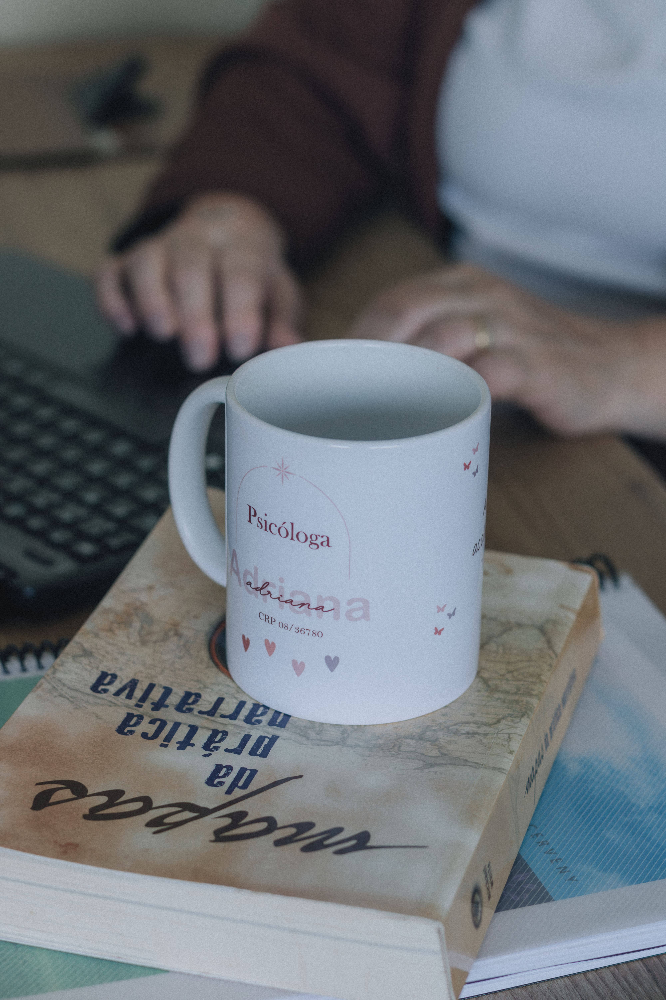

Transformamos histórias, cuidamos de almas e damos voz à sua essência.
Bem-vindos à Clínica Affectum, um espaço de cuidado integral inaugurado em 1 de agosto de 2022. Aqui, acreditamos que a saúde emocional, psicológica e física é para todas as idades. Nossa equipe dedicada está comprometida em ajudar você a alcançar uma vida mais saudável em todos esses aspectos. Seja você uma criança, adulto ou idoso, estamos aqui para apoiá-lo em sua jornada para o bem-estar. Sua saúde é nossa prioridade.


Clareza mental, equilíbrio emocional, autoconhecimento. Encontre o suporte necessário para alcançar o bem-estar emocional com a ajuda de nossos psicólogos. Nossa equipe experiente está aqui para ouvir, apoiar e guiar você em sua jornada para uma vida mais saudável e feliz. Não hesite em dar esse passo em direção a uma mente mais saudável. Entre em contato conosco hoje para marcar uma consulta. Seu bem-estar é nossa prioridade.
A voz é a nossa janela para o mundo. Se você está enfrentando desafios na comunicação, fala, linguagem ou audição, nossos fonoaudiólogos estão aqui para ajudar. Com expertise e cuidado, eles podem diagnosticar, tratar e aprimorar suas habilidades de comunicação. Não deixe que obstáculos na sua voz ou audição limitem sua vida. Marque uma consulta com nossos fonoaudiólogos e dê um passo em direção a uma comunicação mais clara e confiante. Sua voz é única - cuide dela com os especialistas certos.
A psicanálise é a arte de desvendar os labirintos da mente humana. Compreender a si mesmo é o primeiro passo em direção à cura e ao crescimento pessoal. Nossos profissionais altamente qualificados estão aqui para guiá-lo nessa jornada de autoconhecimento. Descubra as raízes de seus desafios emocionais, ganhe clareza e liberte-se das amarras do passado. A psicanálise oferece um espaço seguro para explorar suas profundezas interiores. Comece sua jornada hoje e abra portas para uma vida mais plena e consciente.
A fotografia tem um poder único: o de eternizar momentos e emoções, capturar a essência do que somos e nos lembrar do que realmente importa. Ela vai além de simples imagens; é uma forma de arte que nos conecta com o passado, nos inspira no presente e nos guia para o futuro. Em nosso estúdio, acreditamos que cada momento é único e merece ser registrado com todo carinho e profissionalismo, nossa missão é transformar cada clique em uma lembrança inesquecível.